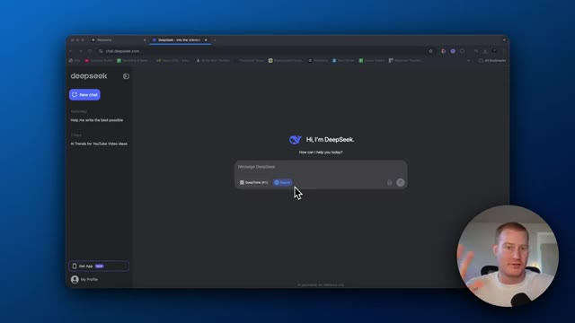
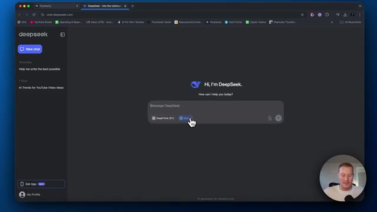
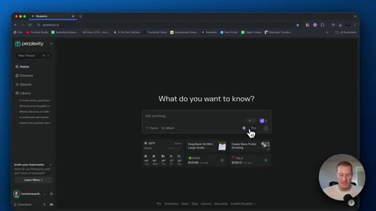
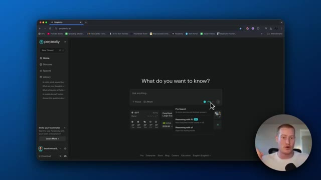
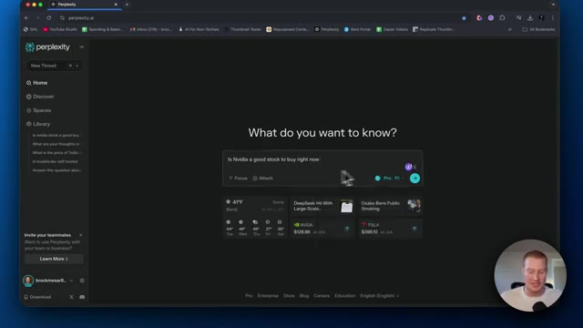
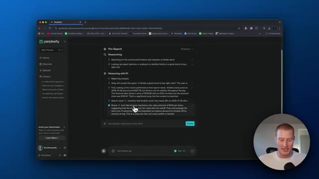
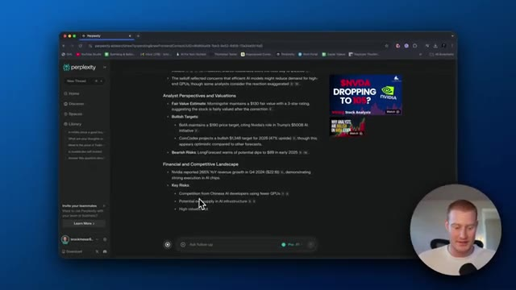
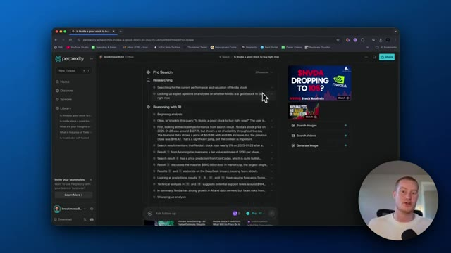
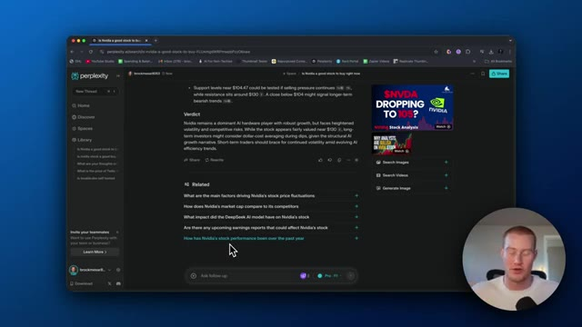

Très bien, donc DeepSeek fait actuellement sensation dans le monde de l'intelligence artificielle et même sur les marchés financiers et tout ça. Tout le monde ne parle que de ça. Donc DeepSeek, qu'est-ce que c'est ? C'est essentiellement un LLM dont les gens disent qu'il est plus performant que ChatGPT et ChatGPT. Oh, avec le raisonnement, c'est plus rapide, c'est meilleur, ça donne de meilleures réponses.
Interface & Outils : Navigateur web affichant l'interface de DeepSeek (chat.deepseek.com).
Contenu textuel & Code : Page d'accueil du LLM DeepSeek avec la zone de saisie de message, les options "DeepThink (R1)" et "Search", ainsi que l'historique des conversations dans le panneau latéral gauche.
Action / Démonstration : Présentation de l'interface principale et des fonctionnalités de DeepSeek par le présentateur.

🔍 AgrandirEt vous pourriez venir sur chat.deepseek.com et vous pourriez interagir avec lui ici même. Vous pourriez voir qu'il a accès à la recherche. Vous pourriez cliquer sur DeepThink R1. Cependant, le problème avec cela, c'est que c'est réellement hébergé en Chine. C'est une entreprise chinoise et les gens se montrent vraiment sceptiques à ce sujet, car vos données sont ensuite stockées en Chine et ils pourraient faire Dieu sait quoi avec ces informations.
Interface & Outils : Navigateur web affichant l'interface de DeepSeek (chat.deepseek.com) avec une incrustation vidéo du présentateur en bas à droite.
Contenu textuel & Code : Page d'accueil du chat DeepSeek affichant le message d'accueil « Hi, I'm DeepSeek », une zone de saisie de texte avec les options « DeepThink (R1) » et « Search ».
Action / Démonstration : Le curseur de la souris survole le bouton de recherche (« Search ») sur l'interface de DeepSeek.

🔍 AgrandirDans cette vidéo, je vais vous montrer que Perplexity vient en fait d'ajouter le raisonnement de DeepSeek R1 dans son moteur de recherche. Si vous ne savez pas ce qu'est Perplexity, c'est essentiellement un moteur de recherche basé sur un grand modèle de langage. C'est vraiment génial si vous voulez l'utiliser pour chercher sur Internet en utilisant l'IA. Et le fait qu'ils aient ajouté ce raisonnement avec notre modèle R1 de DeepSeek est vraiment génial parce que c'est honnêtement un peu mieux que ChatGPT o1, il a accès à Internet et en plus, il est en fait hébergé aux États-Unis. Donc vous n'avez pas à vous soucier que DeepSeek en Chine vole réellement vos informations comme vous le feriez
Interface & Outils : Navigateur web affichant le site web de Perplexity AI (perplexity.ai)
Contenu textuel & Code : Page d'accueil de Perplexity AI avec la barre de recherche "Ask anything..." et des actualités/widgets en bas.
Action / Démonstration : Présentation de l'interface principale de Perplexity AI par le créateur de la vidéo.
devez vous inquiéter lorsque vous interagissez avec, par exemple, deepseek.com. Tout d'abord, vous allez avoir besoin du forfait pro ou vous pouvez simplement avoir l'essai, avec lequel vous obtenez trois invites pour tester cela. Ou vous pouvez vous inscrire avec Pro, ce que j'ai fait pour les besoins de cette vidéo, et vous obtenez un premier mois gratuit, puis un forfait de 20 dollars par mois.
Interface & Outils : Navigateur web affichant l'interface de Perplexity AI.
Contenu textuel & Code : Barre de recherche "Ask anything...", options Focus et Attach, ainsi qu'un bouton "Pro" mis en valeur par le curseur de la souris.
Action / Démonstration : Le présentateur survole l'option "Pro" de l'interface Perplexity pour illustrer l'utilisation d'un forfait payant.

🔍 AgrandirCela va en fait vous faire économiser beaucoup plus d'argent par rapport à l'utilisation de ChatGPT en payant pour leur formule Pro, qui coûte en réalité 200 dollars par mois afin d'accéder à O1. Cela pourrait donc vraiment être un bon investissement pour vous. Laissez-moi donc venir ici et faire un test avec ceci. Je vais simplement dire : est-ce qu'NVIDIA est une bonne action à acheter en ce moment ?
Interface & Outils : Navigateur web affichant l'interface de Perplexity AI.
Contenu textuel & Code : Zone de texte de recherche ("Ask anything"), options "Pro" activées, et menu contextuel affichant "Pro Search", "Reasoning with R1", et "Reasoning with o1".
Action / Démonstration : Le curseur de la souris clique sur les options de recherche et de modèles de raisonnement avancés de l'interface Perplexity AI.

🔍 AgrandirEt je pourrais soit simplement faire une recherche normale, je pourrais raisonner avec O1, ou je pourrais raisonner avec R1, qui est en fait le modèle de raisonnement avancé de DeepSeek, alors laissez-moi chercher ça maintenant, c'est en train de faire des recherches, ça extrait ces sources comme le fait Perplexity, et cela va prendre un certain temps parce que ça raisonne et réfléchit réellement à la question, et cela va donner une réflexion plus approfondie avant de nous donner une réponse, donc vous pouvez voir que ça raisonne maintenant avec R1, alors ça commence l'analyse, bon, attaquons cette requête : est-ce que NVIDIA est une bonne action à acheter en ce moment ? D'abord, en regardant les récentes
Interface & Outils : Navigateur web affichant l'interface de Perplexity AI.
Contenu textuel & Code : Champ de recherche avec la question « Is Nvidia a good stock to buy right now » et le modèle de raisonnement DeepSeek R1 sélectionné.
Action / Démonstration : Saisie et préparation d'une recherche avec le modèle de raisonnement avancé sur Perplexity.

🔍 Agrandirperformances à partir des résultats de recherche, le cours de l'action de NVIDIA était d'environ 127 dollars, beaucoup de volatilité. D'accord. C'est donc comme si l'on effectuait des recherches à travers plusieurs résultats ici afin de réfléchir comme un être humain à travers tout cela et de ne pas se contenter de fournir un résultat très rapidement. On plonge vraiment en profondeur là-dedans. C'est plutôt cool de voir réellement chacune de ces étapes ici. Et voilà. Ça nous montre réellement le cours de l'action. Ça nous montre réellement le graphique boursier de NVIDIA. Et puis voici son raisonnement.
Interface & Outils : Perplexity (moteur de recherche IA)
Contenu textuel & Code : Texte de recherche et de raisonnement concernant les performances de l'action Nvidia, le cours autour de 127 dollars, et des analyses financières (Morningstar).
Action / Démonstration : Le présentateur explique comment l'outil effectue des recherches à travers plusieurs résultats pour analyser l'action Nvidia.

🔍 AgrandirDonc la volatilité récente et la réaction du marché, les perspectives des analystes et les valorisations, le paysage financier et concurrentiel. Cela décompose les principaux risques ici. Une surcapacité potentielle et l'infrastructure de l'IA, ce que je suppose nous avions compris. Et je suppose que nous avons appris cela de DeepSeek et de la manière dont ils ont réellement été capables de construire un très bon modèle de langage étendu, encore meilleur que ChatGPT, pour une fraction du prix. D'accord, voici donc le verdict. NVIDIA reste un acteur dominant du matériel informatique pour l'IA avec une croissance robuste, mais fait face à une volatilité accrue et à des risques concurrentiels. Bien que l'action semble correctement valorisée autour de 130 dollars,
Interface & Outils : Navigateur web affichant l'interface de Perplexity AI.
Contenu textuel & Code : Texte structuré sur les perspectives des analystes, les valorisations, le paysage financier et concurrentiel, et les risques clés liés à Nvidia.
Action / Démonstration : Le présentateur lit et commente les points clés affichés sur l'écran concernant l'analyse financière de l'IA.

🔍 Agrandirles investisseurs pourraient envisager un achat périodique par dollar cost averaging lors des baisses. D'accord, voilà. Donc j'ai réfléchi à ça. C'est super. Mais les gars, je voulais juste vous montrer comment vous pouvez maintenant utiliser DeepSeek R1 dans Perplexity et ne pas avoir à vous soucier de son hébergement en Chine. C'était un gros problème avec l'utilisation de cette plateforme. Beaucoup de gens téléchargeaient en fait DeepSeek R1 localement sur leurs appareils parce qu'ils s'inquiétaient évidemment des problèmes de confidentialité. Et c'est un modèle open source. Vous pouvez donc le faire. Mais cela donne en fait à DeepSeek la possibilité
Interface & Outils : Navigateur web affichant l'interface de Perplexity AI.
Contenu textuel & Code : Le processus de recherche ("Researching") et de raisonnement ("Reasoning with R1") sur l'action Nvidia, incluant l'analyse des performances, de la valorisation et des avis d'experts.
Action / Démonstration : Le présentateur démontre l'utilisation de DeepSeek R1 intégré au sein de Perplexity pour analyser un investissement boursier.

🔍 Agrandirpour chercher sur Internet et ensuite raisonner avec le modèle R1. J'espère donc que cela vous a été utile. Dites-le-moi dans les commentaires si vous finissez par l'utiliser et assurez-vous de vous abonner à cette chaîne. Je parle d'IA pour les non-techniciens, donc je couvre toutes les nouveautés, tous les nouveaux outils et la manière dont vous pouvez les utiliser dans votre vie de tous les jours. Cela étant dit, je vous vois dans la prochaine vidéo.
Interface & Outils : Navigateur web affichant l'interface de Perplexity AI.
Contenu textuel & Code : Texte d'analyse sur l'action Nvidia, niveaux de support et de résistance, ainsi que des suggestions de questions connexes (Related).
Action / Démonstration : Navigation et consultation des résultats de recherche et des recommandations générées par l'IA concernant l'investissement sur Nvidia.

🔍 Agrandir